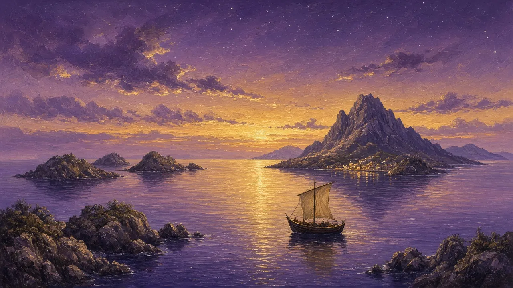
Swords, Magic & the World · C1/C2 · Speaking, Analysis & Discussion
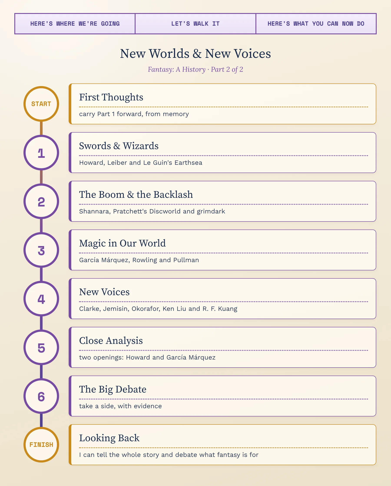
By the 1950s, fantasy had its classic forms: the epic, the fairy tale, the portal into Wonderland and Tolkien's secondary world. The next seventy years would break them open. Pulp writers gave it barbarians and thieves; Ursula K. Le Guin gave it a dark-skinned wizard and magic with a price; publishers turned it into the best-selling fiction on earth; Latin American novelists brought the magic home to ordinary towns; and, finally, writers from all over the world used it to tell myths and histories that the classic tradition had left out. This lesson follows that expansion, and then looks closely at how two great writers open a world in a single paragraph.
1. Retell, briefly: what happens in Beowulf, and what did Tolkien say about its monsters?
2. Define secondary world and eucatastrophe in your own words, with one example each.
3. The “through the door / beyond the map” contrast in one sentence — and which of the four Victorian makers most stuck with you? Say what happens in their book.
4. How did The Hobbit begin — and what makes the Inklings' fantasies different from Carroll's?
While Tolkien was writing in Oxford, a very different fantasy was being printed in America on cheap wood-pulp paper — and thirty years later, on the other side of the country, a young writer imagined a wizard who had to learn what his power would cost.
In the pulp magazine Weird Tales — the same magazine that published H. P. Lovecraft — a new kind of story appeared in the 1930s: fast, violent adventures in imaginary ancient ages, about a lone warrior who survives by strength and cunning, fights sorcerers and monsters, and has no interest in saving the world. C. L. Moore's Jirel of Joiry, from 1934, was its first great heroine.
The form had no name until 1961, when the British writer Michael Moorcock asked readers of a fan magazine to suggest one. The American writer Fritz Leiber proposed “sword-and-sorcery” as “a good popular catchphrase” — and it stuck.
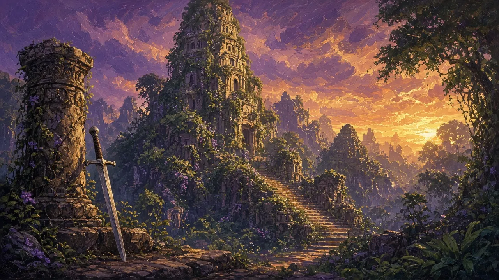
Who he was: a writer from the small town of Cross Plains, Texas, who sold boxing stories, westerns and horror to the pulps, and exchanged long letters with H. P. Lovecraft. He died in 1936, aged only thirty.
Conan the Cimmerian: Conan first appeared in “The Phoenix on the Sword” (Weird Tales, December 1932). Now king of Aquilonia after a life as a thief, pirate and mercenary, Conan discovers that a group of conspirators — helped by a sorcerer they have enslaved — plans to murder him; a dead wizard appears in a dream and marks his sword with a phoenix. Howard set his stories in an invented “Hyborian Age” long before recorded history.
The problem: like his friend Lovecraft, Howard shared many of the racial ideas of his time and place, and they are visible in his invented history and his descriptions of peoples. Readers today admire his energy and still argue about how to read him.
Why he matters: he invented sword and sorcery: the lone, practical hero; the dangerous, half-ruined world; and a magic that is almost always evil.
Who he was: the son of a Shakespearean actor, himself an actor, chess player and writer of horror, science fiction and fantasy.
Fafhrd and the Gray Mouser: his two heroes — Fafhrd, a huge northern barbarian, and the Gray Mouser, a small, clever thief and failed apprentice magician — first appeared in “Two Sought Adventure” (Unknown, August 1939). For about fifty years their adventures, mostly in the decadent city of Lankhmar, mixed danger with jokes and friendship.
Why he matters: he named the genre — and showed that sword and sorcery could be witty, self-aware and humane.
Who she was: the daughter of the anthropologist Alfred Kroeber, raised in Berkeley, California, who became one of the most respected writers of both science fiction and fantasy.
A Wizard of Earthsea (1968): on Gont, one island in a great archipelago, a bronze-smith's son who herds goats, nicknamed Sparrowhawk, shows a gift for magic. At the school of wizards on the island of Roke, proud and jealous of a rival, he tries a forbidden spell to raise the dead — and lets loose a shadow-creature that hunts him across the world. He learns that magic depends on knowing the true names of things, that every spell disturbs the balance of the world, and that the only way to defeat the shadow is to turn and face it. His true name is Ged.
In her own words: the book begins: “The island of Gont, a single mountain that lifts its peak a mile above the storm-racked Northeast Sea, is a land famous for wizards.”
A quiet revolution: Ged and most people of Earthsea are brown-skinned, as Le Guin made clear. In 2004 she wrote an article for Slate, “A Whitewashed Earthsea”, protesting that a television adaptation had made him white — as many book covers had done for decades.
Why she matters: she gave fantasy moral depth — magic with a price, and a hero whose greatest enemy is his own pride.
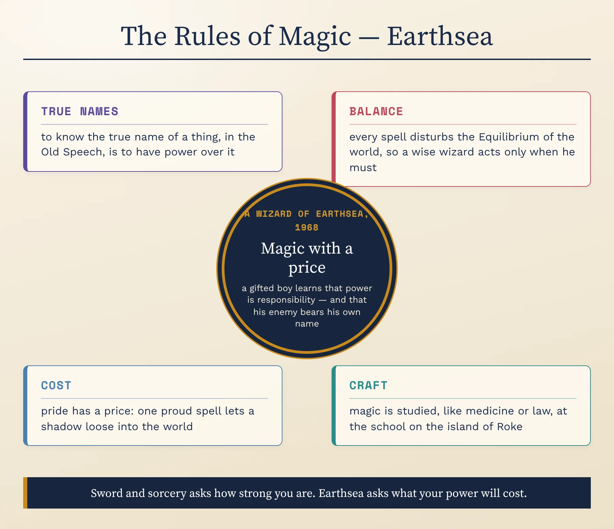
The chart breaks Earthsea's magic into four rules — true names, balance, cost and craft. Take a film, game or series with magic in it. How many of the four does its magic have? Which one does it drop — and does the magic become more exciting, or less believable?
Conan solves problems with a sword; Ged learns that his greatest power is restraint. Which kind of hero do you find more satisfying to read about — and which is more useful to think with?
Four more terms will carry you through the rest of the century. Flip each card, then open the full idea.
Epic fantasy asks who will save the world; sword and sorcery asks who will get out of this tomb alive. Its stories are usually short, its heroes are outsiders — barbarians, thieves, mercenaries — and its magic is dark, dangerous and usually in the hands of the enemy.
Its influence spread far beyond books, into comics, films, tabletop role-playing games and video games, many of which still borrow its ruined cities and lone adventurers.
The idea is very old — Arthur is the only one who can pull the sword from the stone — but the fantasy boom made it a formula: an ordinary young person, often an orphan raised in a quiet place, discovers a hidden heritage and a prophecy that only they can defeat the Dark Lord.
Its appeal is obvious: anyone might be special. Its critics say it teaches that history is made by a few marked individuals rather than by ordinary people working together — and many modern writers deliberately break it.
The term began in art criticism: in 1925 the German critic Franz Roh used Magischer Realismus for a new kind of painting that showed ordinary objects with an uncanny clarity. In 1949 the Cuban novelist Alejo Carpentier described what he called lo real maravilloso, the “marvellous real” that he believed was part of Latin American reality itself.
In fiction, the key is tone: the impossible is reported in the same calm voice as the weather, and no one in the story treats it as strange. In Mendlesohn's terms it is close to liminal fantasy.
The word is borrowed from the advertising line of a war game, Warhammer 40,000: “In the grim darkness of the far future, there is only war.” Readers began using it in the 2000s for fantasy that rejects Tolkien's clear battle between good and evil — writers such as Joe Abercrombie, whose first novel, The Blade Itself, appeared in 2006.
Its defenders call it realistic about power and violence; its critics call it cynical, or say it confuses cruelty with seriousness.
In 1965 an American publisher, Ace Books, used a gap in copyright law to print cheap paperbacks of The Lord of the Rings without Tolkien's permission; an authorised edition from Ballantine followed, and Tolkien became a campus craze. Publishers realised that millions of readers wanted more — and fantasy became big business.
Who he is: an Illinois lawyer who wrote fantasy in his spare time.
The Sword of Shannara (1977): in a world rebuilt long after a great war, a young man of mixed human and elf blood, Shea Ohmsford, learns from the mysterious druid Allanon that he is the last heir of an ancient king — and the only one who can use the magical Sword of Shannara against the Warlock Lord. Its editor, Lester del Rey, chose it to launch a new fantasy list because he thought it could satisfy readers hungry for more Tolkien. It became the first work of fiction on The New York Times trade paperback bestseller list.
The debate: critics have attacked the book as a close imitation of The Lord of the Rings — the wizard, the small heroes, the Dark Lord, the quest. Defenders reply that it proved there was a mass market for fantasy, and opened the door for everyone who came after.
Who he was: a former local journalist and press officer from Buckinghamshire who became one of Britain's best-selling writers. He was knighted in 2009, after announcing in 2007 that he had a rare form of Alzheimer's disease.
Discworld: a flat world that rides through space on the backs of four elephants, who stand on the shell of a giant turtle. The first novel, The Colour of Magic (1983), follows Rincewind, a cowardly wizard who failed at university, as he guides a naive tourist through the dangers of the city of Ankh-Morpork. There are 41 Discworld novels, including Mort (1987), in which Death takes an apprentice, and Guards! Guards! (1989), in which a dragon is summoned to the city.
Why he matters: he began by parodying the clichés of the boom — the chosen one, the wise wizard, the barbarian hero — and ended by using fantasy to write some of the sharpest satire in English about religion, war, the police, the press and prejudice.
Who he is: a writer of science fiction and horror who worked in television in the 1980s before returning to novels.
A Game of Thrones (1996): in the Seven Kingdoms of Westeros, where summers and winters can last for years, the honourable Lord Eddard Stark goes south to serve as the king's chief adviser and is caught in a ruthless struggle for the throne. In the far north, a long winter is coming and something old is waking; across the sea, an exiled princess hatches three dragons. Martin shocked readers by killing off characters they had been taught to see as heroes.
Still unfinished: five of a planned seven books have appeared, the latest in 2011; as of October 2026, the sixth, The Winds of Winter, has no release date. The HBO television series (2011–2019) reached the end first.
Why he matters: he answered Tolkien by asking about tax, politics and the cost of war, and led the turn towards darker, morally grey fantasy.
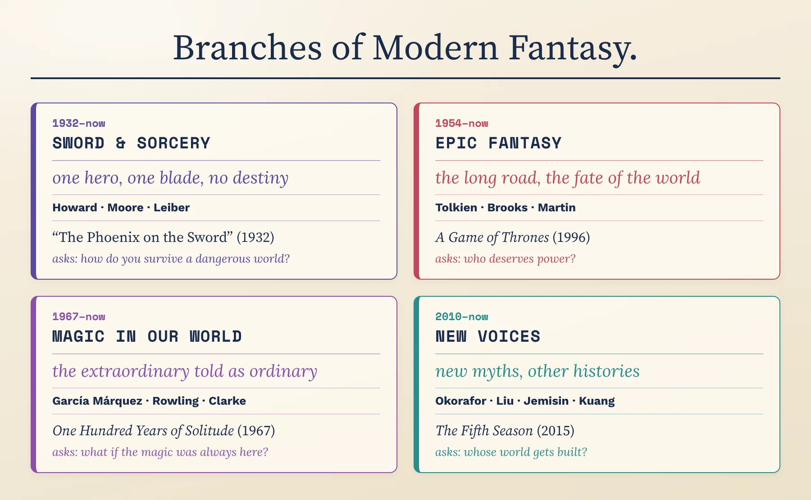
Three writers, three books you now know the shape of: Brooks's heir with a magic sword, Pratchett's cowardly wizard on a flat world, Martin's honest lord in a court of liars. Which would you actually read first — and which premise do you find weakest? Defend both choices; taste needs reasons.
Why was The Sword of Shannara both a landmark and a target? And where does the word “grimdark” come from?
Not all modern fantasy needed a secondary world. Some of the most celebrated books of the last sixty years put the magic back into our own — a Colombian town, a London railway station, an Oxford that is not quite our Oxford.
Who he was: a Colombian journalist and novelist, raised for his first years by his grandparents in the small Caribbean town of Aracataca. He said later that he learned to tell the impossible from his grandmother, who told the most astonishing stories with a completely straight face. He won the Nobel Prize in Literature in 1982.
One Hundred Years of Solitude (1967): the story of seven generations of the Buendía family in Macondo, a town they found in the swamps, from its innocent beginnings through civil wars, a banana company, a massacre and decline. In Macondo a beautiful girl, Remedios, rises into the sky while folding sheets; a man is followed everywhere by yellow butterflies; it rains for four years, eleven months and two days — and nobody is surprised. It appeared in English in 1970, in Gregory Rabassa's translation.
Why he matters: he made magical realism famous around the world, and showed that the fantastic could be a way of telling a nation's real history.
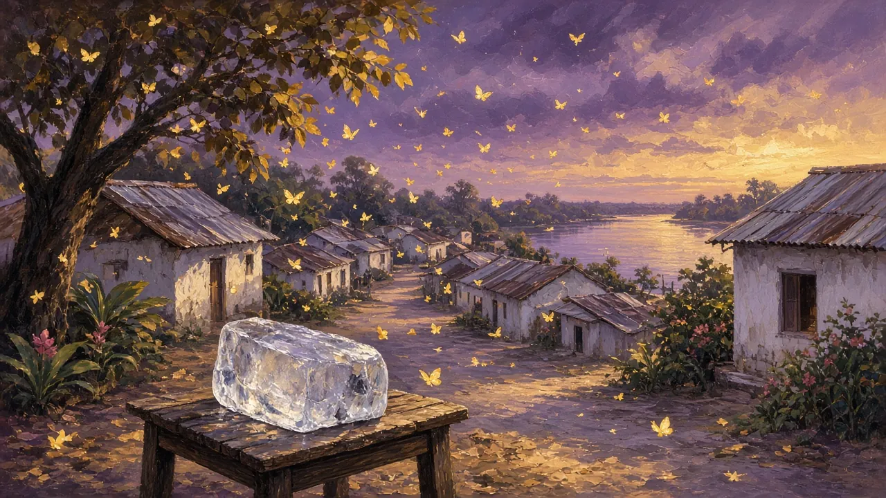
The book: Harry Potter and the Philosopher's Stone was rejected by twelve publishers before Bloomsbury published it in 1997, with a first hardback print run of just 500 copies.
What happens: Harry, an orphan living miserably with his aunt and uncle, learns on his eleventh birthday that he is a wizard — and famous in the wizarding world, because as a baby he survived an attack by the dark wizard Voldemort, who killed his parents. He goes to Hogwarts School of Witchcraft and Wizardry, makes his first real friends and discovers a plot to steal a stone that grants eternal life.
Why it matters: it joined the old English boarding-school story to intrusion and portal fantasy — a hidden magical world inside our own, reached from a London station — and the seven books (1997–2007) had sold more than 500 million copies by 2018, bringing a whole generation to fantasy.
Who he is: a former teacher from Oxford, openly critical of C. S. Lewis's Narnia books.
Northern Lights (1995): in a world like ours but different, where every person's soul lives outside their body as an animal companion called a dæmon, a wild girl called Lyra lives among the scholars of an Oxford college. When children begin to disappear, she travels to the Arctic to find out why. The trilogy, His Dark Materials, takes its title from John Milton's Paradise Lost (1667), where Chaos waits “Unless th’ Almighty Maker them ordain / His dark materials to create more worlds”.
Why he matters: in 2001 the final volume, The Amber Spyglass, became the first children's book to win the Whitbread Book of the Year — and the trilogy turned the portal fantasy into an argument about religion, authority and growing up.
García Márquez is shelved with literary fiction, not fantasy, and many readers would never call him a fantasy writer. Yet his novel has a girl rising into the sky. Does the label matter? Argue it aloud, then compare your view with a critic's.
García Márquez's method is to report impossible events in the same flat, confident voice as ordinary ones. Write three sentences about a normal day in your town in which one impossible thing happens — and nobody is surprised. Read it aloud.
Fantasy was never only English or American — and in the last twenty years, some of its most powerful books have come from writers using the genre to tell myths, histories and lives that the classic tradition left out.
Jonathan Strange & Mr Norrell (2004): in 1806, practical magic in England has been dead for centuries — until the fussy, secretive Mr Norrell of Yorkshire proves that he can still do it, and takes his skills to London to help fight Napoleon. He takes on a brilliant, careless pupil, Jonathan Strange, and the two magicians fall out over the dangerous older magic of the Raven King and the fairy roads that lie behind mirrors. Written in the style of a nineteenth-century novel, complete with scholarly footnotes, it took Clarke more than ten years to write and won the Hugo Award in 2005.
Then: Piranesi (2020), a short, strange novel about a man who lives alone in an endless house of statues and tides, won the Women's Prize for Fiction in 2021.
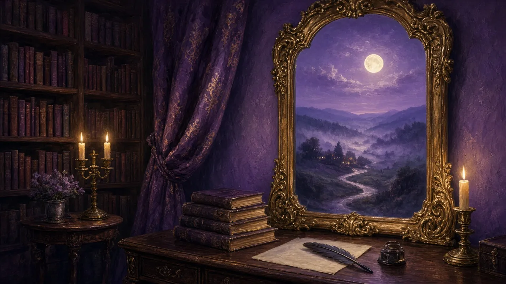
The Fifth Season (2015): on a continent called the Stillness, the earth itself is the enemy: every few centuries a catastrophic “Season” of earthquakes and volcanic winter almost wipes out civilisation. Some people, called orogenes, are born with the power to control the energy of the earth — and they are feared, controlled and enslaved. Essun, an orogene hiding as an ordinary schoolteacher, comes home to find that her husband has killed their son and taken their daughter, just as a new Season begins. Much of the book is told in the second person: “you”.
Why she matters: the three books of the Broken Earth trilogy won the Hugo Award for Best Novel in 2016, 2017 and 2018 — the first time any writer had won it three years running — and turned the genre's magic systems into a powerful story about oppression and survival.
Who she is: an American writer born to Nigerian Igbo parents, whose fantasy and science fiction draw on West African cultures.
Who Fears Death (2010): in a post-apocalyptic Africa, a girl named Onyesonwu — “Who fears death?” — born of violence and rejected by those around her, discovers great magical powers and sets out to confront her father, a powerful sorcerer. A hard, adult book about war and genocide, it won the World Fantasy Award in 2011.
Answering the tradition: in December 2011 she wrote about her conflicted feelings on receiving that award, whose trophy was then a bust of H. P. Lovecraft, given his racism. The debate grew, and in 2015 the award's organisers announced that the bust would be replaced.
Ken Liu, born in China and raised in the United States, was a lawyer and programmer before he wrote fiction. His short story “The Paper Menagerie” (2011) — about a boy whose Chinese mother folds paper animals that come to life, and the son who grows ashamed of her — was the first work of fiction to win the Nebula, Hugo and World Fantasy Awards. His epic fantasy The Grace of Kings (2015) draws on Chinese history, and he translated Liu Cixin's science-fiction novel The Three-Body Problem into English.
R. F. Kuang, born in China and raised in the United States, published The Poppy War (2018) while still in her early twenties: a war orphan from a poor province wins a place at an elite military academy and discovers a terrible power. It reimagines twentieth-century Chinese history, including the Second Sino-Japanese War. Babel (2022), set in an Oxford of the 1830s where magic is powered by translation, won the Nebula Award and the British Book Awards' Fiction Book of the Year.
Why they matter: they bring East Asian history, myth and language into a genre whose classic models were European — and ask who pays for the magic of empire.
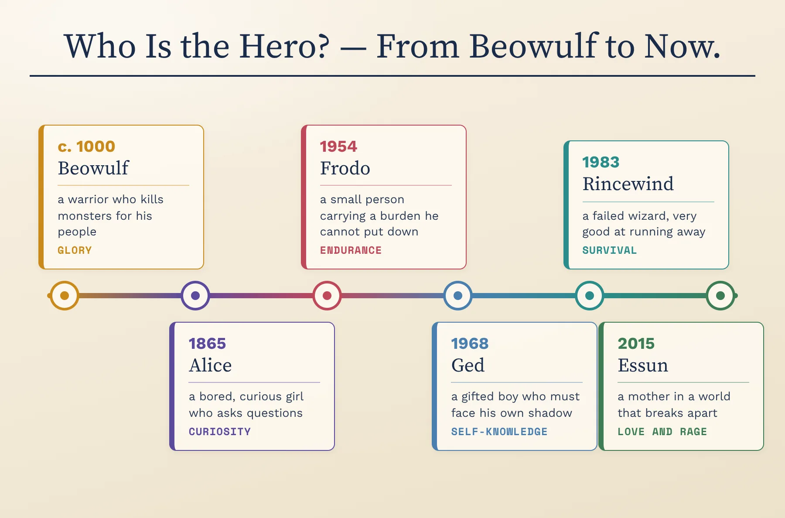
The line moves the hero from a monster-killing warrior to a curious girl, a small person with a burden, a proud boy facing his shadow, a failed wizard and a mother in a breaking world. Choose two neighbouring stops and explain the change: what new idea of heroism made the move necessary? Then add a stop of your own for today — who is the hero now?
Both of our specimens open a world by playing with time — before we know anything about the story. The first is the invented quotation that opens Robert E. Howard's “The Phoenix on the Sword” (1932), whose text is now in the public domain; the second is the first sentence of Gabriel García Márquez's One Hundred Years of Solitude (1967), in Gregory Rabassa's English translation.
Answer aloud first. Then compare.
Write one sentence that opens a fantasy story by jumping in time — either Howard's grand chronicle style (“Know, oh …”) or García Márquez's “Many years later…”. Read it aloud and ask your partner: what kind of fantasy does it promise?
Everything you need for these is now in your head: Howard's barbarian, Leiber's thieves, Le Guin's wizard, Brooks's sword, Pratchett's flat world, Martin's thrones, García Márquez's Macondo, Rowling's school, Pullman's dæmons and the new voices reshaping the genre. Pick two debates. Take a position, support it with the writers and terms you've learned, and concede one point to the other side.
1. “After Tolkien, most fantasy is just imitation.” Was the boom a golden age or a factory — and does Shannara deserve its critics?
2. Is grimdark more “realistic” than Tolkien — or just more cynical? Can a fantasy full of cruelty still offer Tolkien's eucatastrophe?
3. Should the chosen one be retired? Is a story about a hero born to save the world harmful, or simply satisfying?
4. Howard and Lovecraft were enormously influential and shared the racial prejudices of their time. How should a reader, or an award, deal with that legacy — and what did writers like Le Guin and Okorafor do about it?
Draft one sentence comparing Tolkien and Martin that could open a comparative essay. It must make an arguable claim — not just state a difference. Use a frame, then say yours aloud and defend it.
No notes for this — it pulls both lessons together.
1. Sword and sorcery in two sentences: how is it different from epic fantasy? Use Conan as your example.
2. What happens in A Wizard of Earthsea — and what are the rules of its magic?
3. Define the chosen one, magical realism and grimdark, with an example each.
4. Name two new voices, with what happens in one of their books and what it adds to the tradition.
5. Walk the “who is the hero?” line: six stops, six answers.
Now measure yourself against the two big maps — one for the whole timeline, one for the writers. Where you were wrong, say it again, right this time.
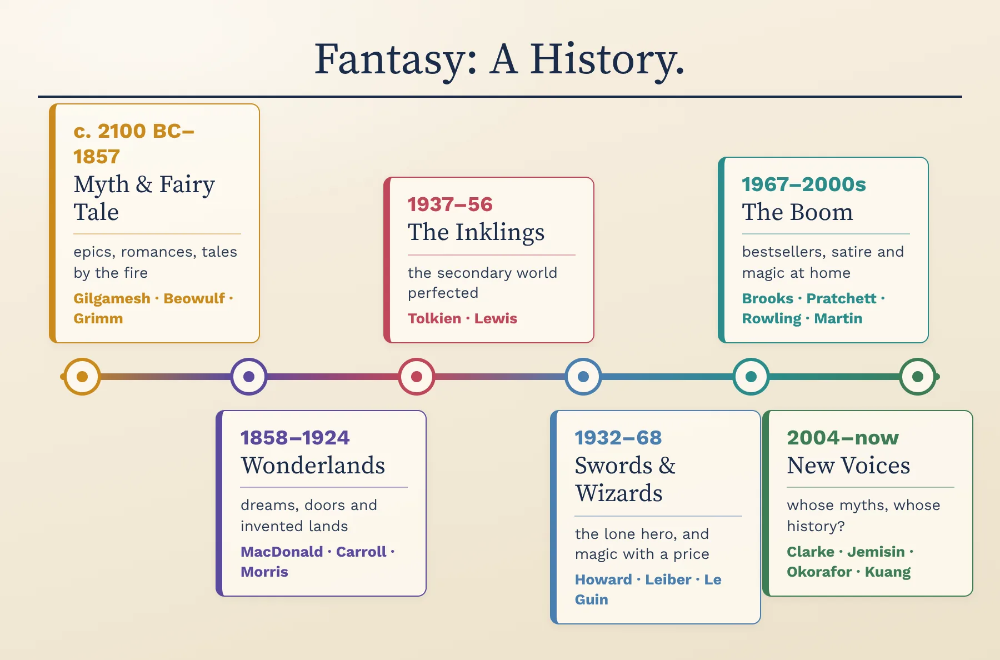
Find three works on the line you could not have placed before these two lessons. For one of them, say what came just before it and how it was a reply — the hero it changed, the rule it broke, or the voice it added.
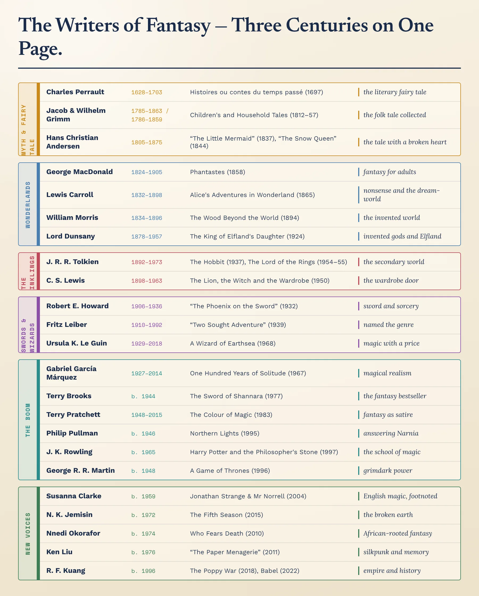
Pick three writers from three different centuries or decades. Put them in order and say, for each, the one thing they added that the writer before them had not — a new world, a new kind of hero, or a whole new point of view.
Define fantasy in a single sentence that covers everything from Beowulf to The Fifth Season. Say it aloud — then stress-test it: does it wrongly include every story with something impossible in it, such as science fiction? Does it wrongly exclude One Hundred Years of Solitude or Alice? Refine it until it survives.
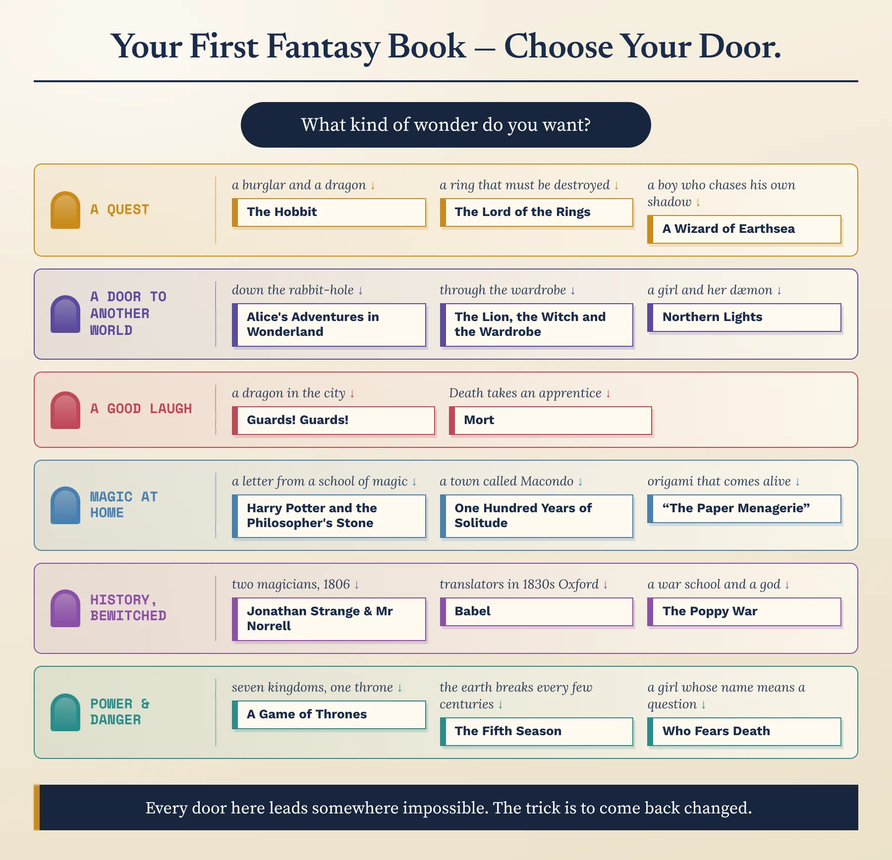
Follow the flowchart to the book it picks for you. Do you agree with where it sent you? Make the case for a different first book instead — in the language of the toolkit: its world, its way in, its hero, what it is really about.
Across both lessons: which movement or writer most changed how you see the genre — and which one book will you actually go and read? (Say why, in the language of the toolkit: secondary world, portal or intrusion, eucatastrophe, sword and sorcery, magical realism, grimdark.)